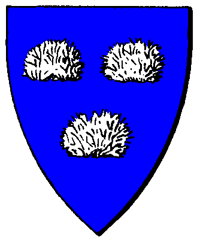

| Übersicht,
Alltägliches und Lokales (RPG) |
|
Atlantis öffnet seine Tore...
|
Lyra Callionymus
 |
...einst mußte ich mich schützen und lies diese Festung errichten. Nun sind aber eigentlich keine Feinde mehr da. Es gibt auch keine Nester mehr auf Wild Cats Island. Es ist ein trostloser Ort geworden.
Trotzdem ist es eine schöne Stadt mit allen Schulen, Bedndurtempel und mehr.
Jedoch sind die Tunnel mittlerweile ziemlich marode geworden und vom Einsturz bedroht.
Die Zivilisation dieser Stadt ist einzigartig und sehr fortschrittlich. Jerdoch befürchten Geologen, dass ein Teil der Insel, auf dem die Stadt errichtet wurde, sich ablösen und im Meer versinken könnte. Wir unternehmen inzwischen Einiges, um dies zu verhindern...
Lady Lyra Callionymus,
Vorsteherin von Atlantis,
Kardinälin im Dienste des einzig wahren Glaubens an Bendur,
Siegerin im Steinekullern 440 und 444
Zur 6. Stunde am 12.Saatmond im Jahre 464 |
10.06.15 20:56
 |
|
Zadar
 |
Welch erfreuliche Nachricht.
Ich wollte schon vor Jahren Wildcats wieder einmal besuchen. Die Insel mag zwar etwas abgelegen sein aber da ich derzeit eine Weltreise plane wird sich ein Abstecher nach Atlantis sicher einrichten lassen.
Zadar
Zur 8. Stunde am 12.Saatmond im Jahre 464 |
10.06.15 21:19
|
|
Lyra Callionymus
|
Meine Stadt spinnt. Die geht plötzlich kaputt, obwohl alle Waren vorhanden sind. Es fehlen aber Arbeiter für die Instandhaltung. Ich mache lieber die Tore wieder zu. Wer weiss, wer da rummanipuliert.
Lady Lyra Callionymus,
Vorsteherin von Atlantis,
Kardinälin im Dienste des einzig wahren Glaubens an Bendur,
Siegerin im Steinekullern 440 und 444
Zur 6. Stunde am 53.Erntemond im Jahre 464 |
01.08.15 10:31
|
|
Hippie Hasenfutter
 |
Dabei kann es sich nur um Sabotage untreuer Ammänner handeln, oder es haben gar die Absieben ihre abscheulichen Handlanger im Spiel.
Gutsherr Hippie Hasenfutter,
Vorsteher von Quell der Hoffnung
Zur 8. Stunde am 53.Erntemond im Jahre 464 |
01.08.15 10:53
|
|
Blixa Biernase
 |
Die Stadt ist ungeachtet dieserAnkündigung nach wie vor nicht für Fremde erreichbar. Vielleicht solltet Ihr auch Eurer Turmbesatzung den Inhalt dieser Verlautbarung übermitteln.
Freiherr Blixa Biernase,
Vorsteher von Portus Spei
Zur 17. Stunde am 83.Erntemond im Jahre 464 |
08.08.15 13:02
|
|
Lyra Callionymus
|
Ich hab doch hier am 6. Stunde am 53.Erntemond im Jahre 464 verkündet, dass ich die Tore wieder geschlossen habe.
Lady Lyra Callionymus,
Vorsteherin von Atlantis,
Kardinälin im Dienste des einzig wahren Glaubens an Bendur,
Siegerin im Steinekullern 440 und 444
Zur 8. Stunde am 85.Erntemond im Jahre 464 |
08.08.15 22:11
|
|
Lyra Callionymus
|
Gerade war die Stadt wieder konstant genug, die Leute lebten in Frieden. Leider ist das nun vorbei. Die Bürger werden Atlantis verlassen und anderswo siedeln. Die Tunnel werde ich bald fluten und die Stadt im Meer versenken.
Desweiteren hisse ich nun die Piratenflagge und kündige masssive Vergeltungsschläge gegen Bendur und seine Konventsmitglieder an.
Baronesse Lyra Callionymus,
Vorsteherin von Atlantis
Zur 24. Stunde am 88.Dunkelfrost im Jahre 465 |
22.11.15 18:36
|
|
Fabius Alagos
 |
Recht so Fräulein, ich bins auch leid der einzige Fiesling hier zu sein!
Silberritter Fabius Alagos,
Vorsteher von Hafenbastei Sturmbrecher,
Ehemann der reizenden Grace
Zur 1. Stunde am 89.Dunkelfrost im Jahre 465 |
22.11.15 18:49
|
|
Icke wieder
 |
Die Saubande hockt doch noch immer in diesem verkommenen Nest. Atlantis, Atlantis....keine Sau wollte dort jemals hin. Es hätte schon nach der Gründung versenkt werden sollen.
Sir Icke wieder,
Hohepriester im Dienste des einzig wahren Glaubens an Bendur
Zur 11. Stunde am 67.Blumenmond im Jahre 466 |
29.12.15 17:56
|
|
Übersicht,
Alltägliches und Lokales (RPG)
|